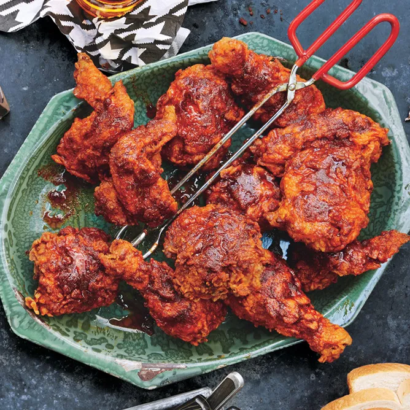

Nashville Hot Chicken

Ingridients
- 2 3.5-4-lb. chickens, each cut into 10 pieces (breasts halved)
- 1 tablespoon freshly ground black pepper
- 2 tablespoons plus 4 tsp. kosher salt
- 4 large eggs
- 2 cups buttermilk or whole milk
- 2 tablespoons vinegar-based hot sauce (such as Tabasco or Texas Pete)
- 4 cups all-purpose flour
- Vegetable oil (for frying; about 10 cups)
- 6 tablespoons cayenne pepper
- 2 tablespoons dark brown sugar
- 1 teaspoon chili powder
- 1 teaspoon garlic powder
- 1 teaspoon paprika
- White bread and sliced pickles (for serving)
Special Equipment
Steps
-
Chicken can be seasoned 1 day ahead. Keep chilled.
-
Toss chicken with black pepper and 2 Tbsp. salt in a large bowl. Cover and chill at least 3 hours.
-
Whisk eggs, buttermilk, and hot sauce in a large bowl. Whisk flour and remaining 4 tsp. salt in another large bowl.
-
Fit a Dutch oven with thermometer; pour in oil to measure 2”. Heat over medium-high heat until thermometer registers 325°. Pat chicken dry. Working with 1 piece at a time, dredge in flour mixture, shaking off excess, then dip in buttermilk mixture, letting excess drip back into bowl. Dredge again in flour mixture and place on a baking sheet.
-
Working in 4 batches and returning oil to 325° between batches, fry chicken, turning occasionally, until skin is deep golden brown and crisp and an instant-read thermometer inserted into thickest part of pieces registers 160° for white meat and 165° for dark, 15–18 minutes. Transfer to a clean wire rack set inside a baking sheet. Let oil cool slightly.
-
Whisk cayenne, brown sugar, chili powder, garlic powder, and paprika in a medium bowl; carefully whisk in 1 cup frying oil. Brush fried chicken with spicy oil. Serve with bread and pickles.
Recommended sauces: